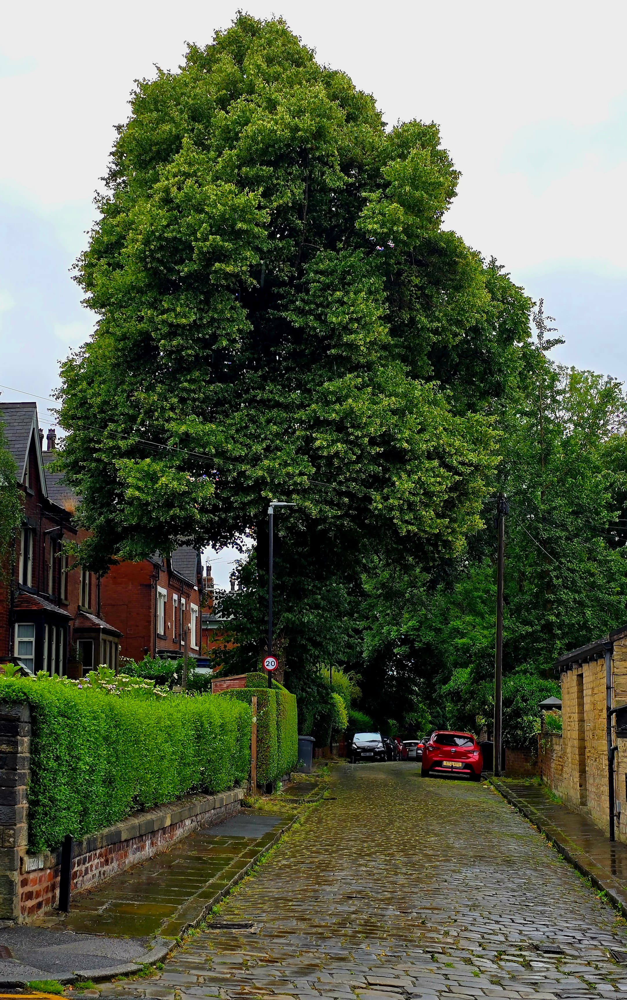
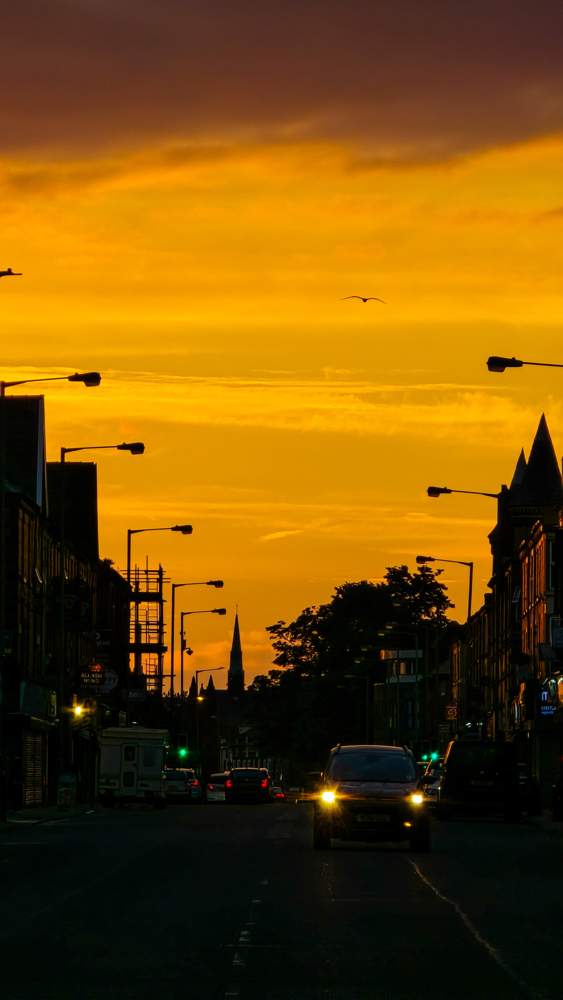

Rain had just left — the street still whispering, and the tree standing like it’s always known your name.
Streets breathe in the golden hush — where light lingers like memory.
Roundhay opens like a Sunday — lazy, loud, and stitched with cloudplay.
A garden path that feels like a secret whispered between stones and sun.

A quiet road exhales gold — silhouettes drift through soft-burning silence.
The Liver Building watches — still, timeless, haloed in city breath.
From the hill, I watched wind and warmth fold the city into sleep.
Even the bus waits — draped in a light that makes everything feel like an ending.
Blue hour blooms and lamplight hum — the museum listens without saying a word.
A street under a storm-painted sky — stillness before the unraveling.

He stood in molten silence — dusk folding around a steel prayer.

A lone swan drifts where sky meets water — unbothered, unhurried.
A sliver of moon, sharp and sure — night’s slow whisper made visible.

Each step soft on stone — the tide listens as I follow the quiet curve.

Under that ticking tower — red lights pulse in the veins of the city.
Dunes hold the dusk gently — the moon watches, patient and pale.
Twilight breathes through the blades — nothing moves, yet everything shifts.
The spire lifts like a question into blue — sunlight ringing through leaves.
City lights blink back at the moon — night is never empty here.

Clouds hold their breath over sleeping streets — silence tucked under stars.
Walls wear stories — a mural, a promise, a house dressed for memory.

Ceilings like wings — the cathedral breathes light through its bones.

A tower of old breath — watching waters that never stop speaking.

Time carved in brick — a clock that remembers more than it tells.

Some streets carry silence better than others — here, even the steeple pauses.

Golden hour drapes the park like soft wool — everything slows in warmth.

Evening traffic hums — a golden river flowing through city veins.

Blossoms drift through city hush — pink poetry under sneakers and sun.

The sky blushes in colour — a brief rainbow kiss over tired rooftops.